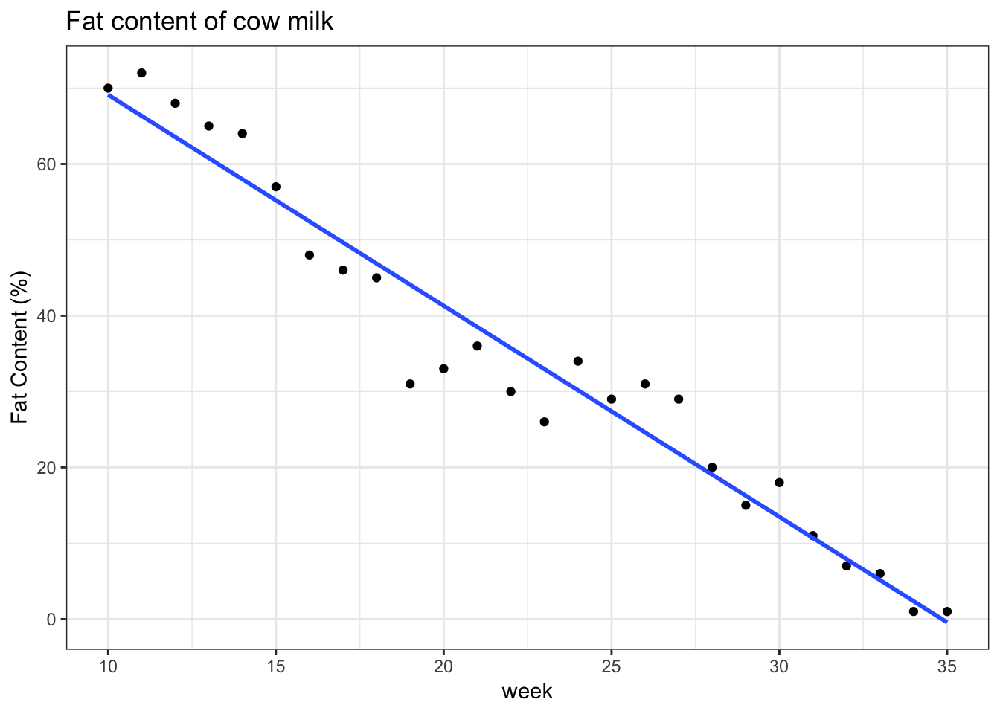

Chapter 18 ANOVA
Caution: in a highly developmental stage! See Section 1.1.
(From 2018-2019 DSCI 561 lab1)
Remember that to make a hypothesis test, we need to first come up with some “distance metric” (called the test statistic) to measure discrepency from the null hypothesis. For example, to test whether two groups have different population means, a t-test bases its distance metric / test statistic on the difference between the two sample means – the further this metric is from 0, the more evidence we have that the null hypothesis is not true.
There’s another way to measure discrepency from the null hypothesis that all group means are equal – a way that allows for any number of groups to be compared all at once (not just two). But, it operates under the assumption that the variance of the data in each group is the same. Here’s the idea. If the population means of each group truly are the same, then we can estimate that common variance in two ways: using the “overall” variance (ignoring the groups altogether), OR by averaging the variances of each group. The distance metric / test statistic is based off of the ratio of these two values (which is more meaningful than looking at the difference between the two).
This is ANOVA – ANalysis Of VAriance.
For the pregnancy (two-group) dataset, calculate:
- the overall variance of the response, and store it in var_tot;
- the average of the variances for each group, and store it in var_grp; and
- how many times larger is (1) compared to (2)? i.e., calculate (1)/(2). Store it in my_ratio.
Take a moment to reflect as to whether you think this is a big difference or not (no need to write anything).
The actual test statistic of ANOVA has minor adjustments to the ratio you just calculated, although is based on the same concepts.
- Since (1) >= (2), the ratio will always be >1. So instead, the numerator is based on the difference between (1) and (2) (this results in a variance sometimes called the “treatment variance”).
- The variance estimates don’t always use n-1 – they adjust for the number of groups, based on the concept of “degrees of freedom”.
Still, the larger the ratio (test statistic), the less evidence we have to support the null hypothesis.
Your task: run the ANOVA in R using the aov() function for the pregnancy data. Quality code uses broom::tidy(). Then, store the p-value in preg_aov_p, the test statistic in preg_aov_F, and the “Species” and “Residuals” degrees of freedom (df) as a length-2 vector in the variable preg_aov_df.
If the null hypothesis is true, then the sampling distribution of this test statistic is (to a good approximation) a specific F-distribution. This “good approximation” is thanks to the CLT, and is true as long as the sample size isn’t small (and it’s always true if the data are Gaussian).
18.1 The types of parametric assumptions
A model can be parametric (i.e., containing parameters) in roughly two ways:
18.1.1 1. When defining a model function.
For example, in linear regression, we assume that the model function is linear. We might also make assumptions about the conditional variance.
This tends to be the meaning of “parametric” in Computer Science.
18.1.2 2. When defining probability distributions.
For example, we might assume that residuals are Gaussian, or perhaps some other distribution.
This tends to be the meaning of “parametric” in Statistics.
18.2 The value of making parametric assumptions
There are arguably two reasons one might bother making a parametric assumption. They are:
- Reduced error.
- Interpretability.
18.2.1 Value #1: Reduced Error
One value of making parametric assumptions is that we might achieve reduced error. As long as we don’t introduce as many parameters as there are observations (or more), here’s what generally happens when we make an assumption:
- The model variance decreases. You can think of the reason behind this in two ways:
- we’re adding information to our data set; or
- we don’t need to estimate as many quantities.
- The bias increases the “more incorrect” your assumption is.
- This is because we’re identifying a framework that is almost surely not true.
Recall that mean squared error has both (squared) bias and model variance as components. The hope is that your model is “correct enough” so that the increase in bias is small in comparison to the decrease in variance, resulting in an overall decrease in error.
Challenge: run a simulation to convince yourself of this – first in the univariate setting (where bias and variance are more interpretable), then in the regression setting.
For more information on the bias-variance tradeoff, check out Section 2.2.2 of the ISLR book.
18.2.2 Value #2: Interpretation
Sometimes making a parametric assumption does not reduce the overall error by much, even when the assumption is true. This would not be appealing if all you care about is prediction performance. But if you want to gain some insight into relationships between your predictors and response, then introducing a parameter so that it has meaning will help with this task.
For example, assuming the mean response is linear in the predictors gives us meaning behind the slope parameter, as it corresponds to the expected change in response associated with a difference of 1 unit of the corresponding predictor.
The bonus here is that we don’t always need to think of the parameters as being strictly correct. Your assumptions will never hold exactly, so as long as the assumption is not completely unreasonable, the parameters at least give you a sense of what’s going on in your data.
suppressPackageStartupMessages(library(tidyverse))In Regression I, the response was allowed to take on any real number. But what if the range is restricted?
18.3 Problems
Here are some common examples.
- Positive values: river flow.
- Lower limit: 0
- Percent/proportion data: proportion of income spent on housing in Vancouver.
- Lower limit: 0
- Upper limit: 1.
- Binary data: success/failure data.
- Only take values of 0 and 1.
- Count data: number of male crabs nearby a nesting female
- Only take count values (0, 1, 2, …)
Here is an example of the fat content of a cow’s milk, which was recorded over time. Data are from the paper “Transform or Link?”. Let’s consider data as of week 10:
cow <- suppressMessages(read_csv("data/milk_fat.csv"))
(plot_cow <- cow %>%
filter(week >= 10) %>%
ggplot(aes(week, fat*100)) +
geom_point() +
theme_bw() +
labs(y = "Fat Content (%)") +
ggtitle("Fat content of cow milk"))Let’s try fitting a linear regression model.
plot_cow +
geom_smooth(method = "lm", se = FALSE)
Notice the problem here – the regression lines extend beyond the possible range of the response. This is mathematically incorrect, since the expected value cannot extend outside of the range of Y. But what are the practical consequences of this?
In practice, when fitting a linear regression model when the range of the response is restricted, we lose hope for extrapolation, as we obtain logical fallacies if we do. In this example, a cow is expected to produce negative fat content after week 35!
Despite this, a linear regression model might still be useful in these settings. After all, the linear trend looks good for the range of the data.
18.4 Solutions
How can we fit a regression curve to stay within the bounds of the data, while still retaining the interpretability that we have with a linear model function? Remember, non-parametric methods like random forests or loess will not give us interpretation. Here are some options:
- Transform the data.
- Transform the linear model function: link functions
- Use a scientifically-backed parametric function.
18.4.1 Solution 1: Transformations
One solution that might be possible is to transform the response so that its range is no longer restricted. The most typical example is for positive data, like river flow. If we log-transform the response, then the new response can be any real number. All we have to do is fit a linear regression model to this transformed data.
One downfall is that we lose interpretability, since we are estimating the mean of \(\log(Y)\) (or some other transformation) given the predictors, not \(Y\) itself! Transforming the model function by exponentiating will not fix this problem, either, since the exponential of an expectation is not the expectation of an exponential. Though, this is a mathematical technicality, and might still be a decent approximation in practice.
Also, transforming the response might not be fruitful. For example, consider a binary response. No transformation can spread the two values to be non-binary!
18.4.2 Solution 2: Link Functions
Instead of transforming the data, why not transform the model function? For example, instead of taking the logarithm of the response, perhaps fit the model \[ E(Y|X=x) = \exp(\beta_0 + \beta x) = \alpha \exp(\beta x) \]. Or, in general, \[ g(E(Y|X=x)) = X^T \beta \] for some increasing function \(g\) called the link function.
This has the added advantage that we do not need to be able to transform the response.
Two common examples of link functions:
- \(\log\), for positive response values.
- Parameter interpretation: a difference of one unit in the predictor is associated with an \(\exp(\beta)\) times increase in the response, where \(\beta\) is the slope parameter.
- \(\text{logit}(x)=\log(x/(1-x))\), for binary response values.
- Parameter interpretation: a difference of one unit in the predictor is associated with an \(\exp(\beta)\) times increase in the odds of “success”, where \(\beta\) is the slope parameter, and odds is the ratio of success to failure probabilities.
18.4.3 Solution 3: Scientifically-backed functions
Sometimes there are theoretically derived formulas for the relationship between response and predictors, which have parameters that carry some meaning to them.